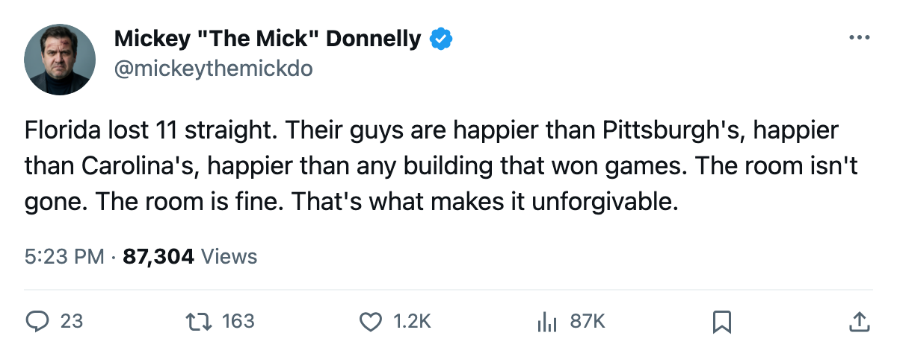
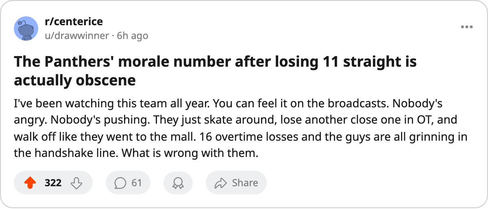

11 STRAIGHT LOSSES, 95.4 MORALE, $13.64 MILLION BANKED: THE PANTHERS ARE HAVING A FINE TIME
They lost 16 overtime games, went 15-26 at home and 15-26 on the road, and their room is the 6th happiest in hockey. Nobody's mad. Nobody's going anywhere.
 Mickey "The Mick" DonnellyColumnist, ex-goalie · The Penalty Box
Mickey "The Mick" DonnellyColumnist, ex-goalie · The Penalty Box
The Florida Panthers

 Florida Panthers finished 25-36-16. Eleven straight losses to close the season. Sixteen games lost in overtime, the most in the league. And the club average morale in that building sits at 95.4, sixth-highest of 30 rooms.
Florida Panthers finished 25-36-16. Eleven straight losses to close the season. Sixteen games lost in overtime, the most in the league. And the club average morale in that building sits at 95.4, sixth-highest of 30 rooms.
They lost 16 overtime games. Chicago and Carolina lost 14. The next-best is 12. Florida is 2 ahead of everyone else in the loss column when the clock hits zero and nobody on this roster could close. They went to overtime 21 times and lost 16. That is not bad luck. That is a club that has no idea how to finish.
 Vaclav Nedorost83 is up six on the Bureau's Development Index and posted 25 points in 69 games.
Vaclav Nedorost83 is up six on the Bureau's Development Index and posted 25 points in 69 games.  Pavel Trnka70 is down three and managed 8 points in 53 games. The payroll is $51.07 million. For that money you get 236 goals for, 255 against, and a goal differential of minus 19. You get a team where not a single player finished in the top 30 in scoring. Not one.
Pavel Trnka70 is down three and managed 8 points in 53 games. The payroll is $51.07 million. For that money you get 236 goals for, 255 against, and a goal differential of minus 19. You get a team where not a single player finished in the top 30 in scoring. Not one.
Here's what gets me. The Panthers were 15-26 at home and 15-26 on the road. Identical. Perfectly, mathematically terrible in every building in this league. Most bad teams find something. A barn they can defend, a city that helps them out. Florida found nothing. 14,971 fans sat in that building at $79 a ticket and watched their team lose exactly as often at home as anywhere else.
Against the top two clubs in their division, it was worse. Washington: 0-3-2. Never beat them once. Tampa Bay: one overtime win in five meetings. One win in nine regulation and overtime games against the clubs nearest them in the standings. The season is over. Those numbers do not improve.
The owner banked $13.64 million. That is the number that ends this conversation. There is no urgency to fix what you have built when the cash register rings through an 11-game losing streak, through 16 overtime defeats, through a season where your boys are the sixth-happiest room in professional hockey while losing everything that moves.
I have been saying all year that the room matters. I have been screaming about teams where the men hate each other, where morale sits at 85 and the wins evaporate. Well, here is the other failure mode. The room is fine. The men are fine. They walked off the ice after the eleventh straight loss and went home happy, and the owner filed his profit, and next October they will put the same sweaters on again.
At least when the room is gone, somebody can blame the coach. You cannot blame a man for a 95.4 morale. You can only wonder what he is teaching them out there.

